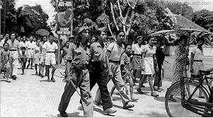

About Yogyakarta
Yogyakarta (DIY) adalah wilayah tertua kedua di Indonesia setelah Jawa Timur, yang dibentuk oleh pemerintah negara bagian Indonesia. Daerah setingkat provinsi ini juga memiliki status istimewa atau otonomi khusus. Status ini merupakan sebuah warisan dari zaman sebelum kemerdekaan. Kesultanan Yogyakarta dan juga Kadipaten Paku Alaman, sebagai cikal bakal atau asal usul DIY, memiliki status sebagai “Kerajaan vasal/Negara bagian/Dependent state” dalam pemerintahan penjajahan mulai dari VOC , Hindia Perancis (Republik Bataav Belanda-Perancis), India Timur/EIC (Kerajaan Inggris), Hindia Belanda (Kerajaan Nederland), dan terakhir Tentara Angkatan Darat XVI Jepang (Kekaisaran Jepang). Oleh Belanda status tersebut disebut sebagai Zelfbestuurende Lanschappen dan oleh Jepang disebut dengan Koti/Kooti. Status ini membawa konsekuensi hukum dan politik berupa kewenangan untuk mengatur dan mengurus wilayah [negaranya] sendiri di bawah pengawasan pemerintah penjajahan tentunya. Status ini pula yang kemudian juga diakui dan diberi payung hukum oleh Bapak Pendiri Bangsa Indonesia Soekarno yang duduk dalam BPUPKI dan PPKI sebagai sebuah daerah bukan lagi sebagai sebuah negara.
image yogyakarta
